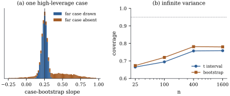

23.6 When resampling fails
The consistency theorems of this chapter assume exchangeable resampled quantities, a smooth statistic, a fixed number of parameters, a finite error variance, no dominant case, independence, and a sample large enough for limits to be relevant. When any of these fails, the bootstrap can fail silently, producing a distribution that looks reasonable and is wrong.
23.6.1. A statistic that is not smooth: the maximum
The cleanest failure is not specific to regression.
Let
(a)
(b) For every sample with distinct values, the case bootstrap gives
So the bootstrap distribution of
Proof.
- (a) For
- (b)
With
import numpy as np
rng = np.random.default_rng(2310)
n = 50
u = rng.uniform(size=n)
B = 20_000
boot_max = u[rng.integers(0, n, size=(B, n))].max(axis=1)
atom = np.mean(boot_max == u.max())
print(f"bootstrap P*(max* = max) = {atom:.3f}; 1 - (1 - 1/n)^n = {1 - (1 - 1 / n) ** n:.3f}")23.6.2. Heavy tails
Without a finite error variance the sample mean, and any least squares coefficient, is not asymptotically normal. Athreya (1987) showed that the bootstrap of the mean then converges not to the correct stable limit but to a random limit that differs from sample to sample: resampling cannot learn a tail that shows up only through a few enormous values.
Figure 23.6.1(b) shows
the consequence for coverage. The data are samples from
a Pareto law with tail index
23.6.3. One dominant case
When one case has leverage near one, Eq. 23.1.1 fails and the case bootstrap splits into resamples that contain the case and resamples, about a third of them, that do not.
Take

import numpy as np
rng = np.random.default_rng(2313)
n_l = 15
x_l = np.append(np.linspace(0, 1, n_l - 1), 4.0) # one case far from the rest
X_l = np.column_stack([np.ones(n_l), x_l])
h_l = np.sum((X_l @ np.linalg.inv(X_l.T @ X_l)) * X_l, axis=1)
y_l = 1 + 0.5 * x_l + 0.3 * rng.normal(size=n_l)
y_l[-1] -= 1.0 # and not quite on the line of the others
idx = rng.integers(0, n_l, size=(20_000, n_l))
xs, ys = x_l[idx], y_l[idx]
xc = xs - xs.mean(axis=1, keepdims=True)
b_case = np.sum(xc * ys, axis=1) / np.sum(xc ** 2, axis=1)
absent = ~np.any(idx == n_l - 1, axis=1)
print(f"leverage of the far case {h_l[-1]:.3f}; resamples without it: {absent.mean():.3f}")The residual and wild bootstraps keep the far case,
but inherit the problem (Example (The wild bootstrap for Engel’s data)):
its residual has variance
23.6.4. Many parameters
With
A simulation with
import numpy as np
def variance_ratios(n, p, reps, B, rng):
"""Bootstrap variance of the first coefficient divided by its true variance (errors N(0, 1))."""
X = rng.normal(size=(n, p)) # fixed design
XtX_inv = np.linalg.inv(X.T @ X)
true_var = XtX_inv[0, 0]
H = X @ XtX_inv @ X.T
out = {"residual": [], "rescaled": [], "case": []}
for _ in range(reps):
y = rng.normal(size=n) # beta = 0
e = y - H @ y
fit = H @ y
for name, r in [("residual", e), ("rescaled", e * np.sqrt(n / (n - p)))]:
Ys = fit + r[rng.integers(0, n, size=(B, n))]
out[name].append(np.var(Ys @ (X @ XtX_inv)[:, 0]) / true_var)
bs = []
for _ in range(B):
i = rng.integers(0, n, size=n)
bs.append(np.linalg.lstsq(X[i], y[i], rcond=None)[0][0])
out["case"].append(np.var(bs) / true_var)
return {k: float(np.median(v)) for k, v in out.items()}
rng = np.random.default_rng(2314)
print(variance_ratios(60, 30, reps=20, B=100, rng=rng))23.6.5. Dependence
Resampling independently destroys serial correlation.
With positively autocorrelated errors and a smooth
regressor, the true variance of a slope far exceeds the
independent-errors formula (Theorem 19.2.2),
which every bootstrap of this chapter reproduces. Take a
straight line in time with
The moving-block bootstrap (Künsch
1989) resamples blocks of consecutive residuals and so
keeps the dependence within blocks. With blocks of
length
import numpy as np
def dependence_study(n, phi, reps, B, block, rng):
"""True sd of the slope, and the average iid and moving-block residual-bootstrap standard errors."""
x = np.linspace(0, 1, n)
X = np.column_stack([np.ones(n), x])
A = np.linalg.solve(X.T @ X, X.T)
slopes, se_iid, se_block = [], [], []
starts_max = n - block + 1
for _ in range(reps):
eps = np.empty(n)
eps[0] = rng.normal() / np.sqrt(1 - phi ** 2)
for i in range(1, n):
eps[i] = phi * eps[i - 1] + rng.normal() # AR(1) errors
y = 1 + 2 * x + eps
b = A @ y
e = y - X @ b
slopes.append(b[1])
Ys = X @ b + e[rng.integers(0, n, size=(B, n))]
se_iid.append(np.std(Ys @ A[1]))
starts = rng.integers(0, starts_max, size=(B, n // block))
idx = (starts[:, :, None] + np.arange(block)).reshape(B, -1)
Ys = X @ b + e[idx]
se_block.append(np.std(Ys @ A[1]))
return np.std(slopes), np.mean(se_iid), np.mean(se_block)
rng = np.random.default_rng(2316)
print(dependence_study(100, 0.7, reps=100, B=200, block=10, rng=rng))23.6.6. Small samples
A bootstrap distribution computed from eight
residuals is an estimate from eight numbers. Take a
straight line with
import numpy as np
from scipy import stats
def small_n_coverage(n, reps, B, rng):
"""Coverage of 95% intervals for a slope with normal errors: t, residual percentile, bootstrap-t."""
x = np.linspace(0, 1, n)
X = np.column_stack([np.ones(n), x])
XtX_inv = np.linalg.inv(X.T @ X)
A = XtX_inv @ X.T
c = np.sqrt(XtX_inv[1, 1])
hits = {"t": 0, "percentile": 0, "studentized": 0}
for _ in range(reps):
y = rng.normal(size=n) # true slope 0
b = A[1] @ y
e = y - X @ (A @ y)
s = np.sqrt(e @ e / (n - 2))
hits["t"] += abs(b) <= stats.t.ppf(0.975, n - 2) * s * c
Ys = X @ (A @ y) + e[rng.integers(0, n, size=(B, n))]
bs = Ys @ A[1]
ss = np.sqrt(np.sum((Ys - (Ys @ A.T) @ X.T) ** 2, axis=1) / (n - 2))
lo, hi = np.quantile(bs, [0.025, 0.975])
hits["percentile"] += lo <= 0 <= hi
tl, th = np.quantile((bs - b) / (ss * c), [0.025, 0.975])
hits["studentized"] += b - th * s * c <= 0 <= b - tl * s * c
return {k: v / reps for k, v in hits.items()}
rng = np.random.default_rng(2318)
print(small_n_coverage(8, reps=300, B=499, rng=rng))Idea. Before trusting a bootstrap, check each assumption listed at the start of this section, and studentize the root. A permutation test needs only exchangeability under the null hypothesis, and is exact or not at all.
23.6.7. Exercises
A. Check your understanding
Compute
Solution. The values are
In the moving-block bootstrap with blocks of length
B. Practice
In Example (A slope determined by one case),
show that the probability that the far case appears at
least twice in a resample is
Solution. The number of times the
case is drawn is binomial with
C. Going deeper
For the uniform maximum of Proposition 23.6.1,
show that the